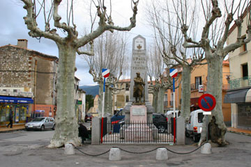
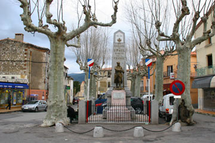

Til siderne lå vinmarker, og vejene var kantede med plataner. I Aix standsede vi i en forstad hvor der var et stort marked med mange muslimer på indkøb. Jeg ledte efter underbukser og købte også to perlekranse. Bagefter købte vi ind til en dejlig vejsidefrokostk. Lige før Tuolons slog lejr i Buffalo Camping. Jeg lavede mad.og vaskede vores tøj i en vaskemaskine. Hjalte hang det op på en af vores lange ledninger.

Vi satte os ned på en cafe efter at have spist brød og rocquefort på hotelværelset. Regnen var hørt op og i dagens løb blev vejret lunere imens vi kørte ad hovedvejen mod Montpellier med 80 km i timen. I Arles standsede vi fordi Grønne havde brug for at lade op. Byens turistkontor prøvede for første gang at hjælpe besøgende i elbil. Det var ikke let. Vi var for sent ude, byen holdt siesta og alle værksteder var lukkede og offentlig strøm havde man endnu ikke i denne by fra Romertiden. Vi besluttede at vi havde kørt langt nok for, parkerede Grønne og tog en lang spadseretur igennem den gamle bydel med et meget velbevaret Coliseum og amfiteater. Jeg købte en campingguide og en flaske vin. Vi endte dagen på en campingplads 10 km uden for byen hvor jeg kogte spaghetti imens Hjalte rejste teltet. Nogle frøer kvækkede og Grønne stod og sang.
Nina


I morges da alt var gennemblødt gav jeg Nina et lille stød da hun satte to våde hænder på min sidedør. Men jeg kan altid starte, og hele dagen susede, jeg Grønne, rundt på de små stejle bjergveje mellem Albi og Lodève. Regnen øsede ned, og floderne gik over deres bredder, men det generede ikke mig det mindste. Om eftermiddgen da jeg var ved at løbe ud for energi kørte Hjalte og Nina i fire timer frem og tilbage og ud og ind ad Lodève for at finde strøm til mig og senge til dem selv. Campingpladsen var lukket, bed and breakfast var optaget, og hotellet i byens udkant havde ingen parkeringsplads. De fandt en sjælden offentlig ladestander fra firmaet Flot Bleu beregnet til "camping cars". Men der var intet sted at sove. Først til sidst opdagede de at Hotel Du Nord på torvet i Lodéve havde en stor, tør og lun garage. Der blev jeg tilsluttet den lækreste 16 ampere. Hele natten slubrede jeg strøm til mig, ja, jeg havde sikkert fået fedt på sidebenene, hvis jeg havde haft sådan nogle.
Grønne

Et tilfældigt møde på grænsen til Frankrig åbnede dørene til Continentals store udviklingscenter i Toulouse hvor 2500 ingeniører arbejder med komponenter til fremtidens biler og elbiler bl.a. til Renault. Elbilingeniørerne var meget interesserede i Grønne og flere fik en prøvetur. Grønnes specifikationer imponerede dem. Det opmuntrede os at se hvor meget der satses på at skabe godfe elbiler. Om eftermiddagen kom vi til Albi og så den dystre, borgagtige katedral. Vejret er stadig koldt, men vi ligger i telt og lader på vintertomme campingpladser.
Hjalte

For 100 år siden huggede man vej i de lodrette klipper i Gorges du Galamus fra St. Paul de Fenouillet. Dybt nede i afgrunden hagede et lille kloster sig fast. Vinden rev i os og tunge skyer hang over bjergene. Langt oppe fik vi øje på runde hvide telte. Mongolske jurter. Vi standsede og vandrede ned til teltene. En lille gruppe idealister forsøgte at leve her uden at skade naturen. For 700 år siden var disse bjerge hjemsted for Katharerne, "de rene". Kristne som ikke fulgte paven og derfor blev forfulgt og dræbt af kirkens soldater. Vi endte dagen på en lille campingplads med helårsbeboere i fastgroede campingvogne. Der var stormvarsel og udsigt til væltede træer. Vi satte dog teltet op og stolede på at vi nok skulle klare natten.
Hjalte
 

Da morgenen gryede var vejret klaret op. På cafeen kom nogle af karnevallets deltagere ind, stadig i kustumer. Den store parade skulle starte klokken tolv, vi var imponerede over byens evne til at feste. Vi besluttede dog at køre videre. Vejen slyngede sig stejlt opad og nedad lige på kanten af afgrunden, med udsigt store udsigter til klippekysten med små og store byer. Grønne susede ned gennem svingene, på dæk som vi knapt kan se er slidte efter turen over USA. Vi passerede grænsen og kom ind i Frankrig. Om aftenen tog vi på campingplads i St. Paul de-Fenouillet hvor der var strøm til Grønne. Hjalte lavede mad på primussen og bagefter gik vi på nettet med vores satellitantenne fra Thrane og Thrane, som sidder ovenpå bilen. Det småregnede da vi krøb i soveposerne.
Nina


Regnen skyllede ned uden ophør på denne grå dag. Og da vi kom ned til kysten ved Port Bou stormede det og bølgerne var meget voldsomme. Efter nogen søgen fik vi lejet et billigt hotelværelse og Grønne fik kommunal strøm fra et nærliggende lokale. Om aftenen overraskede den lille turisttomme by os med et eventyrligt karneval. Ind i en stor sal kom flokke af tyrolere, spillekort, engle, djævle, sørøvere, myg, troldmænd, egyptere og mange andre. Unge og gamle, børn, tykke og tynde, Alle i byen var med og de kendte jo hinanden så stemningen var høj. Hjalte og jeg var i dagens løb blevet meget våde, så da indmarchen var slut og festen blev vildere trissede vi hjemad.
Nina

Barcelona er en dynamisk, sjov og civiliseret by. Vi måtte løsrive os, men vender helt sikkert tilbage. Det lille Hostal Alogar har været et godt sted at bo og Grønne har ladet lunt og hurtigt hos Toni i Abarth Parking. Vi besluttede at tage småveje helt ude ved Middelhavet. Små gamle byer vokset sammen med nye huse. Hæslige turistsiloer og tivoliplat ved Lloret del Mar og sindsyg stejl, flot kyst ved Tossa. Grønne og Conti tager de skarpe sving i bedste rally stil. Bare vent Monte Carlo!
Hjalte


Grønne havde tilbragt natten i en garage med ladestik. Derfra kørte vi ud i byen, mellem de mange fantasifulde huse og skulpturer. Gaudis mesterværk, katedralen La Segrada Familia, som vi så for 24 år siden er stadig er under opbygning. Grønne blev derefter sat på en parkeringsplads med ladestander. I dejligt vejr vandrede vi ud i byen, hvor vi gik vi ned ad Ramblaen mod havnen. Derfra tog vi bussen til en fotobutik hvor jeg købte et nyt fotografiapparat. Det gamle var ødelagt af fugt og ridser på linsen. Da vi kom tilbage var Grønne fuldt opladet og stod og smilede, propmæt. Vi kørte så op ad snoede veje til en lille restaurant med en storslået udsigt over Barcelona

Barcelona gav os en herlig dag. På nettet havde vi fået kontakt med LiveBarcelona, kommunens elbil-initiativ og nu sad vi om et veldækket bord med Ramon, Luis, Marc og Monica og udvekslede elbilerfaringer. LiveBarcelona er et offentligt-privat samarbejde mellem kommunen, bilfabrikker, elselskaber og andre om at gøre det attraktivt at køre elbil i Barcelona. Vi brugte ladestanderne i byen: lette at finde og bruge. Om aftenen sendte TV-Barcelona direkte fra Grønne. Barcelona fik i konkurrence med Paris og Geneve værtskabet til EVS-27, som bliver verdens største begivenhed for elbiler i 2012. Elbiler er fremtiden og Barcelona satser stort på at være med i front.
Hjalte